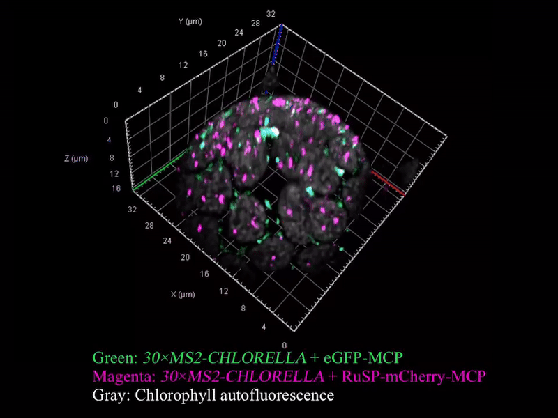

MS2 live-RNA tracking
MS2/MCP-based visualization of nascent RNAs in living cells.
Enjoy advancing science, molecule by molecule.
MS2/MCP-based visualization of nascent RNAs in living cells.

Fusion and relaxation properties of biomolecular condensates.
My research focuses on how biomolecular condensates control cellular physiology and plant development. I integrate liquid–liquid phase separation (LLPS) assays, plant biology models, and single-molecule imaging techniques to link molecular interactions with mesoscale organization.
(To be added: bullet points describing lab skills, imaging pipelines, and publications experience.)